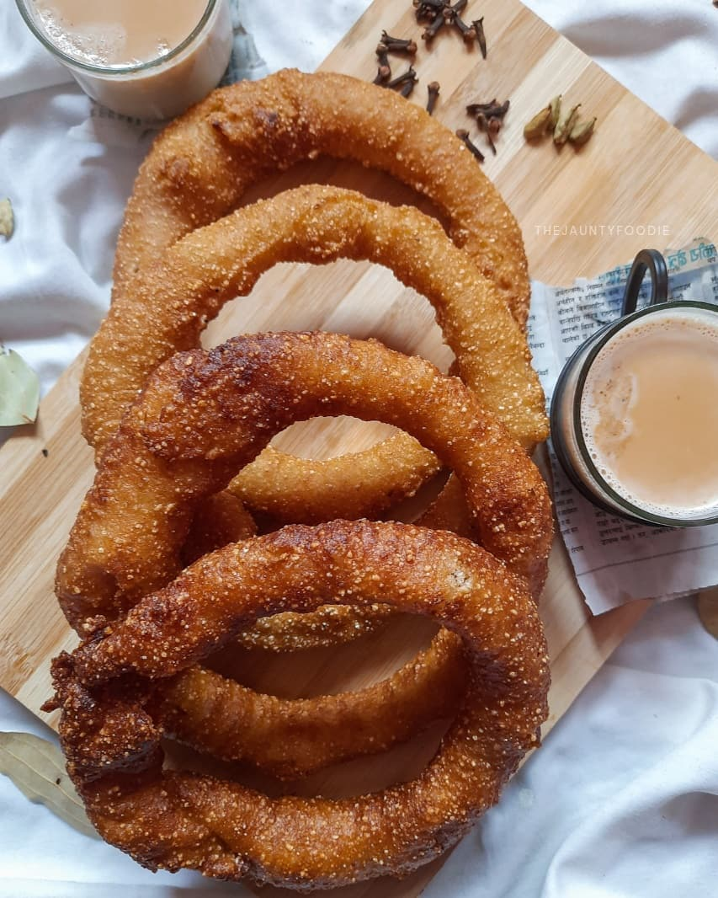
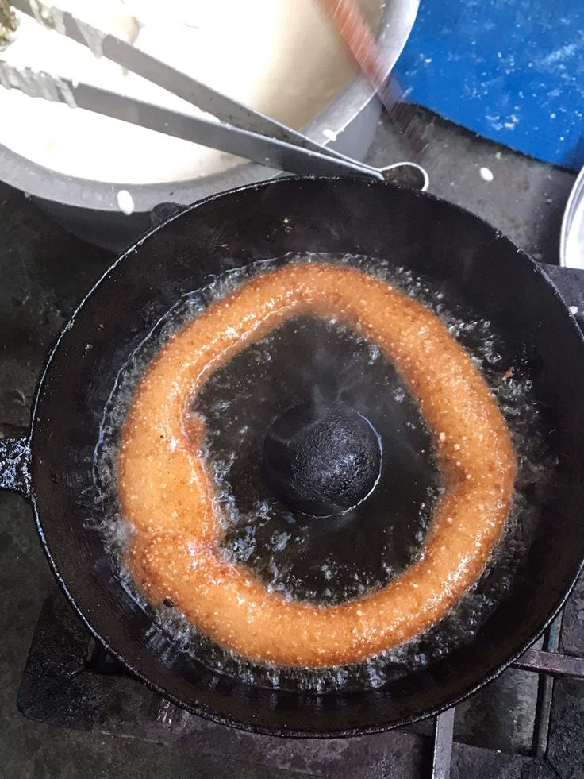
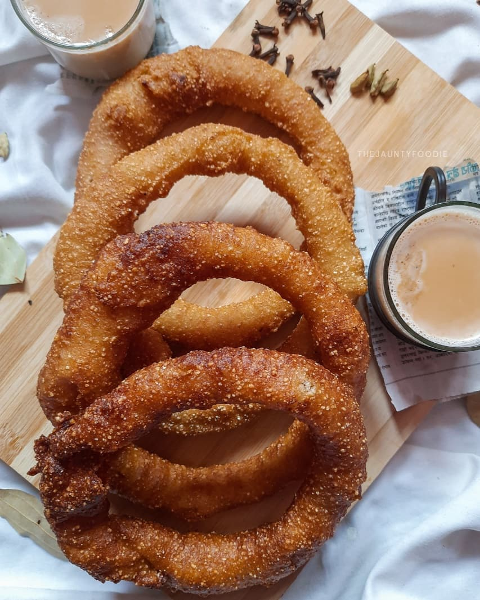
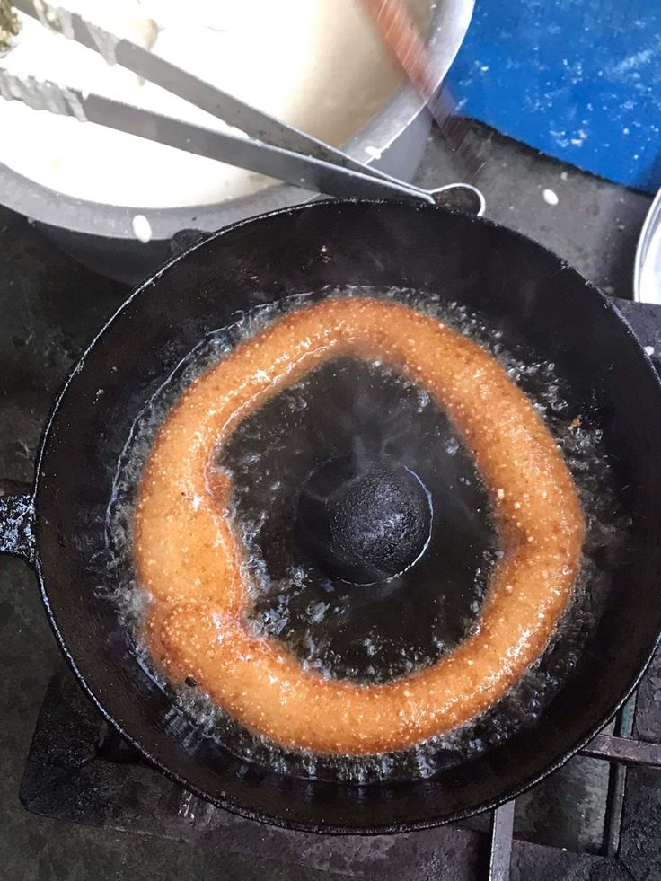

Milk Tea(Masala Chiya)
Milk tea is a warm and comforting drink of every Nepali household made with special bayleaf with the blend of spices, each family having their own version.
Explore Recipe 



Sel Roti is a traditional Nepali ring-shaped rice flour doughnut, crispy on the outside and soft inside. Made mainly from rice flour, sugar, and milk, Sel Roti is deep-fried until golden brown. It is prepared during festivals like Dashain and Tihar, and also on special occasions. People enjoy Sel Roti with tea or curry. Sel Roti is not just food, it is a symbol of Nepali tradition, culture, and togetherness. The sweet, ring-shaped bread is shared with relatives, neighbors, and guests as a sign of love and respect.
 Prep Time
Prep Time6 - 8 hours (for soaking rice)
15 - 20 mins (batter prep)
 Cook Time
Cook Time20 - 30 mins
 Ingredients:
Ingredients:  Instructions:
Instructions:  Pro Tips
Pro Tips
Milk tea is a warm and comforting drink of every Nepali household made with special bayleaf with the blend of spices, each family having their own version.
Explore Recipe
Yomari is a popular Newari sweet dish prepaed from rice flour filled with chaku or khuwa, specially prepared during yomari punhi.
Explore Recipe
Tama is a traditional Nepali dish made from fermented bamboo shoots, often cooked with black-eyed peas and potatoes. Known for its unique sour flavor.
Explore Recipe